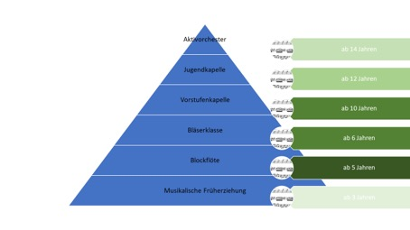

Musik macht kreativer und sozial kompetenter, fördert die Konzentrationsfähigkeit und damit das Leistungsvermögen.
Konzentration: Wenn Kinder musizieren, müssen sie mehrere Aufgaben bewältigen und zugleich ihre Aufmerksamkeit bündeln: Das Auge liest Noten, das Gehirn verarbeitet die Informationen, die Hände setzen alles am Instrument um. Diese kompakten Übungen steigern die Konzentrationsfähigkeit.
Soziale Kompetenz: Kinder, die ein Instrument spielen und gemeinsam Musik machen, verstehen sich untereinander besser. In den Musikstunden lernen sie wichtige soziale Kompetenzen wie z.B. sich anpassen, auf andere zugehen, voneinander lernen, gemeinsam Verantwortung tragen und kritikfähig sein. Musikalische Aktivität fördert zudem das Selbstbewusstsein. Auch in außermusikalischen Bereichen des Vereinslebens, wie z.B. bei Veranstaltungen, Auftritten oder Ausflügen wird die soziale Kompetenz der Jungmusiker maßgeblich gefördert.
Kreativität: Musik ist individuell und frei interpretierbar. Jeder hat seine eigene Art und Weise, Melodien wahrzunehmen und umzusetzen. Für Kinder, die sich aktiv mit Musik beschäftigen, heißt das: Sie üben Fantasie, Kreativität und die Fähigkeit, Gefühle auszudrücken.
Nachfolgend eine schematische Darstellung über die verschiedenen Phasen der musikalischen Ausbildung im Musikverein Hart.
Die angegebenen Altersangaben dienen hier lediglich zur Orientierung!
Mit unserem Ausbildungskonzept möchten wir Kindern ab 3 Jahren die Möglichkeit bieten, ein Instrument zu erlernen und in der Gruppe die Freude an der Musik zu entdecken.
Bereits ab einem Alter von 3 Jahren können Kinder im Rahmen der musikalischen Früherziehung mit spielerischen Systemen den Grundstein für die Musik legen.
Mit dem Erlernen der Blockflöte werden die ersten musikalischen Kompetenzen wie das Notenlesen und rhythmische Gestaltung von einfachen Musikstücken erworben. Der Unterricht wird wahlweise/parallel beim Musikverein Hart unter der Leitung von Jungmusikern oder/und an der Grundschule in Haigerloch während der 1. und 2. Klasse angeboten.
Nach den ersten musikalischen Erfahrungen erfolgt ab der 3. Schulklasse im Rahmen die Ausbildung am Blasmusikinstrument oder Schlagzeug. Bei der Instrumentalausbildung arbeiten der Musikverein Hart und die Grundschule Haigerloch im Rahmen der „Bläserklasse“ mit ausgebildeten Musiklehrern der Jugendmusikschule Hechingen zusammen. Der Unterricht erfolgt ab der 3. Klasse in der Registergruppe und mit dem Gesamtorchester an der Grundschule in Haigerloch (Orchestergröße ca. 15 – 20 Kinder). Folgende Instrumente werden in der Bläserklasse angeboten:
Nach zwei Jahren in der Bläserklasse legen die Kinder das Juniorabzeichen ab. An der Realschule Haigerloch wird die Bläserklasse auch in der Sekundarstufe weitergeführt. Kinder, die das Gymnasium in Haigerloch oder andere Schule besuchen, nehmen nach der Grundschule Instrumentalunterricht über den Musikverein in Kooperation mit dem Musikverein und haben die Möglichkeit in den vereinseigenen Jugendorchestern mitzuspielen.
Selbstverständlich kann -in Kooperation mit der Jugendmusikschule Hechingen- auch jederzeit außerhalb der Grundschule mit der Instrumentalausbildung begonnen werden.
Sobald die meisten Töne erlernt wurden, können die Kinder bereits in unserer Vorstufenkapelle mitspielen. Dadurch möchten wir die Kinder möglichst früh in den Musikverein integrieren und die Freude am gemeinsamen Musizieren fördern, denn der Spaß steht hier absolut im Vordergrund. Die gemeinsame Vorstufenkapelle wird von mehreren Musikvereinen zusammen organisiert was wiederum sicherstellt, dass die Kinder in einer größeren Einheit musizieren können.
Die Jugendkapelle baut auf die Kenntnisse der Vorstufenkapelle auf. Ziel ist hierbei, die Kinder und Jugendlichen bzw. Erwachsenen auf ihre zukünftige Mitwirkung im Aktivorchester vorzubereiten. Dementsprechend sind die Lernziele im Jugendorchester unter anderem: Intonationsübungen, technische Fähigkeiten erweitern, Schlagtechniken eines Dirigenten kennenlernen.
Während der Zeit in der Jugendkapelle kann das Leistungsabzeichen D1 (und im Abschluss daran auch D2 und D3) erworben werden. Die Vorbereitung auf die theoretische Prüfung wird hierbei vom MV organisiert; die praktische Vorbereitung erfolgt jeweils mit dem Instrumentallehrer.
Mit zunehmender Spielerfahrung erfolgt dann der Schritt zum Aktivorchester, zunächst meist parallel zum Jugendorchester. Im Aktivorchester liegt der Fokus auf der Weiterentwicklung des musikalischen Könnens des gesamten Orchesters.
Quereinstieg
Auch ältere Jugendliche oder Erwachsene können jederzeit mit der Ausbildung bei uns im Musikverein beginnen. Ein Quereinstieg ist in jeder Phase der Ausbildung für Kinder/Jugendliche und Erwachsene möglich. Selbstverständlich kann ein(e) Musiker(in) direkt in jedes der Orchester aufgenommen werden oder auch ein (Zweit-)Instrument erlernen.
Instrumente
Der Musikverein verfügt über einen begrenzten Bestand an Instrumenten, die wir gegen eine geringe Miete zur Verfügung stellen. Darüber hinaus gibt es auch die Möglichkeit, ein Instrument, das gerade nicht zur Verfügung steht, von einem externen Anbieter zu mieten. Später, wenn ein Ausbildungserfolg absehbar ist, ist auch ein Mietkauf eine Variante, sich ein Instrument zu beschaffen.
Kosten
Die Kosten für die einzelnen Ausbildungsbereiche gestalten sich recht unterschiedlich und sind immer Abhängig von der Teilnehmerzahl. Grundsätzlich sind es aber vertretbare Kosten, welche sinnvoll in die Ausbildung der Kinder investiert sind. Der Musikverein Hart gewährt ab gewissen Ausbildungsstufen auch Zuschüsse für die Unterrichtseinheiten mit den Musiklehrern und trägt die Gesamtkosten für die jeweiligen Dirigenten.
Sollten Sie noch Fragen zu unserem Ausbildungskonzept haben, wenden Sie sich bitte jederzeit an unsere Jugendleiterin Sabrina Konsdorf unter folgenden Kontaktdaten:
jugendleiter(at)musikverein-hart.de